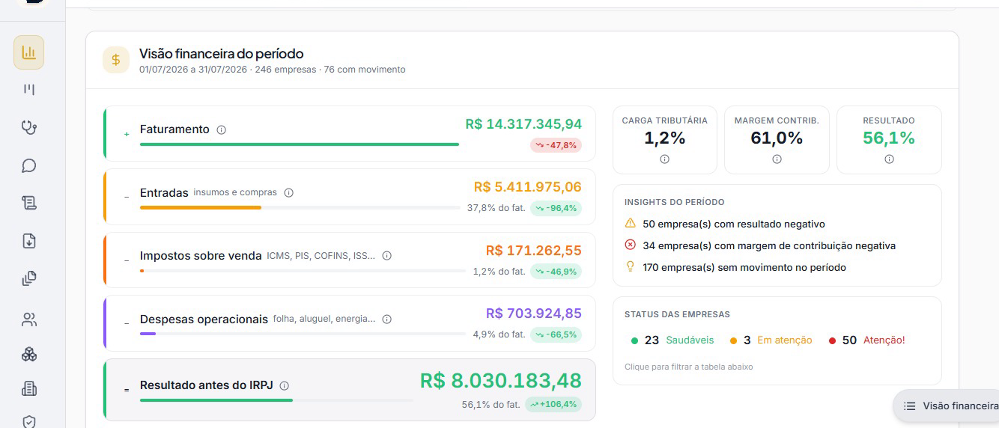
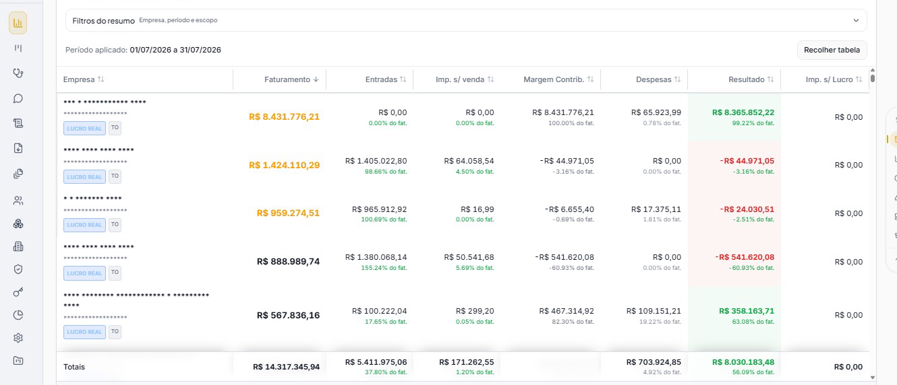

O dado já existe
Seu escritório trabalha no Domínio, a origem das informações usadas pelo DataDom.
Para quem está à frente de um escritório contábil, clareza importa. O DataDom importa automaticamente os dados que você já produz e mostra a carteira em relatórios e dashboards fáceis de acompanhar.

Dados demonstrativosEntre fechamentos, atendimentos e demandas do dia a dia, nem sempre sobra tempo para juntar informações e enxergar o panorama da carteira.
O DataDom coloca esses dados em uma leitura mais direta, para a equipe dedicar mais atenção à análise e à conversa com cada cliente.
Ver o que a plataforma mostraO DataDom captura dados do Domínio e organiza as informações que seu escritório já produz em uma leitura útil para a rotina.

Imagem ilustrativa da interface. Dados da tela são demonstrativos.Um fluxo simples para que a tecnologia organize a informação e a equipe continue no centro da decisão.
Seu escritório trabalha no Domínio, a origem das informações usadas pelo DataDom.
O DataDom faz a captura automática e organiza os dados em relatórios.
Dashboards ajudam a acompanhar a carteira e conversar com mais contexto.
Conheça a plataforma e fale com a equipe DataDom pelos canais oficiais.